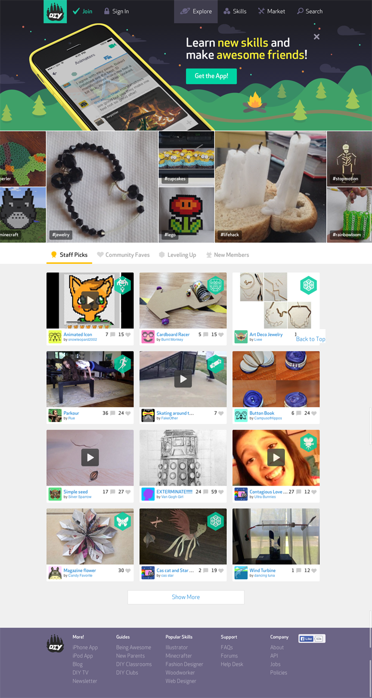
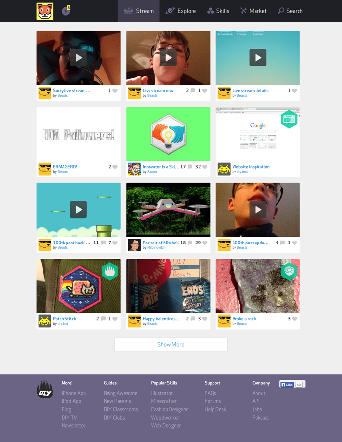

For my usability class, we had to work with a client for the whole quarter to run a usability test on their product and create a detailed report and presentation presenting our findings and recommendations.
DIY is an online community for kids to participate in and share “do it yourself" projects. I've been a fan of their service for years, so I emailed them and they were kind enough to agree to work with our group. They were interested in looking at the social feedback loop on the site, so we focused on social interactions and a couple of core tasks, like posting projects, where friction could hurt member retention. The results are private, but you can look at our test kit. I think the task around avatar recognition was pretty clever.
I got trained on the tobii eye tracker in this class, but we limited ourselves to Silverback and Morae for our actual testing.